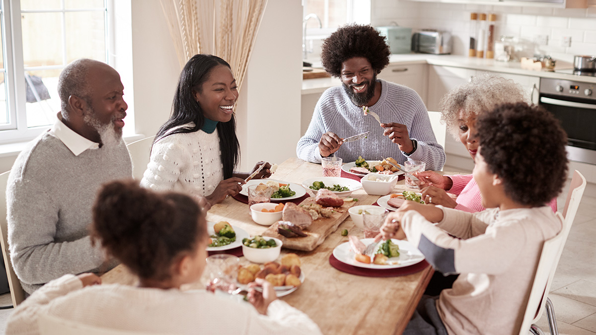

Political socialization is the process of learning how to behave politically. It can include determining the party you support, how much value you place on voting, and how much interest you have in current events regarding the government. Most people learn their views on politics and government from their families. Two out of three Americans follow their parents’ political views. This makes perfect sense, since much of your personality and outlook on life comes from your family. You spend quite a bit of time around them in your formative years, so why wouldn’t they affect your political views?
People also tend to be influenced by other social groups, such as work and friend groups. There’s a powerful drive for people to get along with people they spend time with. Some of this can be a result of self-sorting—the process by which people tend to socialize with others who are like them. It would follow that friends share political views.
Political views often are a result of “nature and nurture” rather than purely logical decision making. That is, a person’s political beliefs are increasingly viewed as part of his or her personality rather than a series of impartial decisions. You can see some of this in the stark divide in voting patterns based on geography. Rural voters tend to vote Republican, while urban voters tend to vote Democrat. Some of this can be attributed to self-segregation, but much of it can be attributed to fitting in with the surrounding culture.